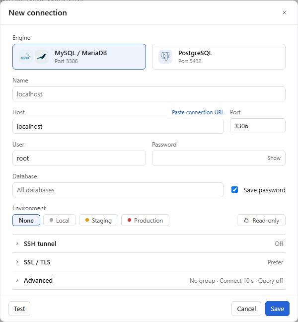
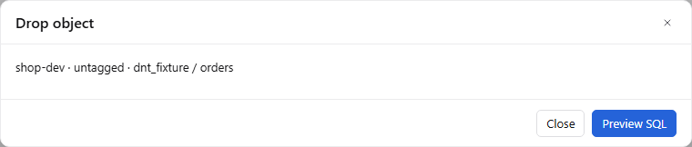
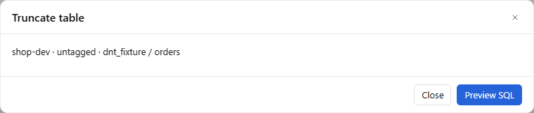
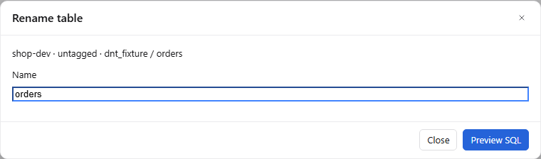
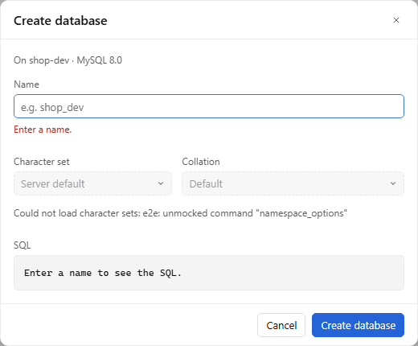
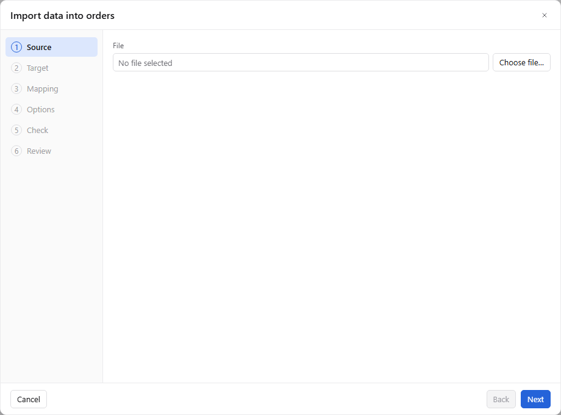
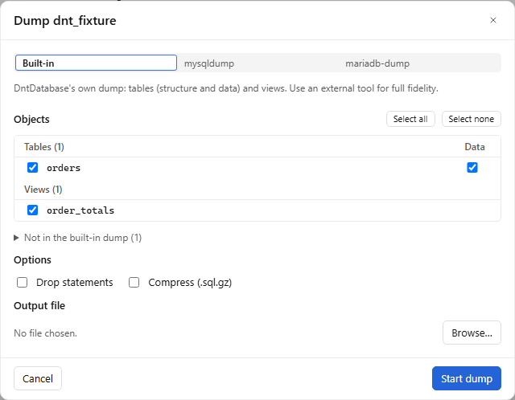
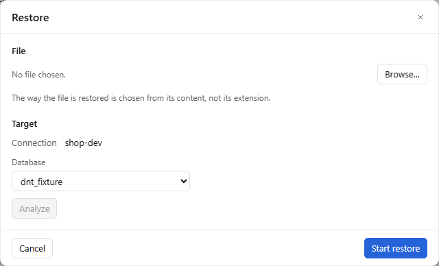
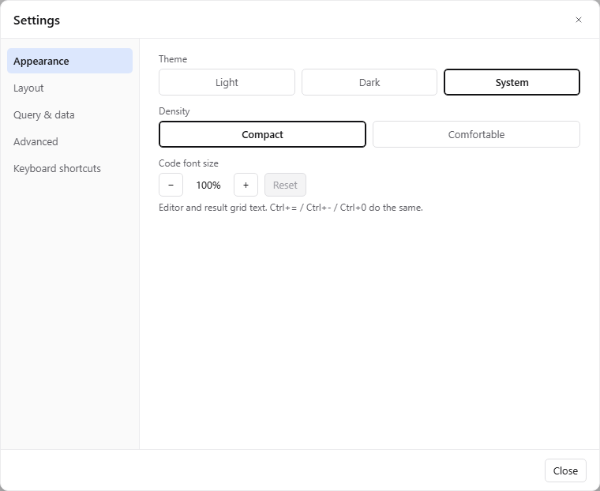
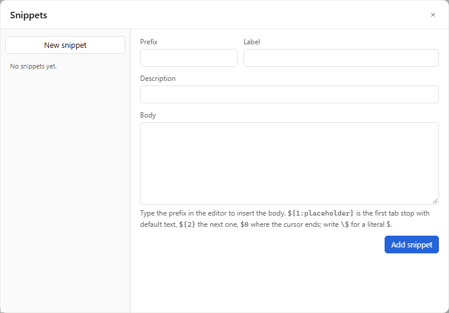

Audit hiện trạng — 26 modal
Rà soát code (ui/src/dialogs, transfer/, tabs/data) và chụp thật từng modal qua fake backend (e2e-web/modal-audit/). Khung Modal.tsx ổn (focus trap, Esc, trả focus), nhưng mỗi dialog tự dựng layout riêng nên không nhất quán, và nhóm dialog thao tác object (drop / truncate / rename) yếu nhất: chỉ một dòng text trong khung rộng 760px.
| Modal | Điểm | Vấn đề chính | Thiếu chức năng | Ưu tiên |
|---|---|---|---|---|
| Drop / Truncate / Drop database | Khung 760px cho 1 dòng; phải bấm "Preview SQL" mới thấy tác động; nút Apply màu xanh cho DROP; chữ "untagged", "Drop namespace", "Drop object" | Số dòng bị ảnh hưởng, object phụ thuộc, CASCADE/RESTRICT, IF EXISTS, RESTART IDENTITY, Copy SQL / Open in query, chọn nhiều object | P0 | |
| Rename table | Giống trên; không validate tên, không chặn trùng tên cũ; Enter không submit | SQL live, danh sách view/FK tham chiếu bị ảnh hưởng | P0 | |
| Confirm (7 biến thể) | Chỉ 1 chuỗi; "1 unsaved changes", "tab(s)"; xoá connection không báo tab sẽ đóng | Slot chi tiết/list, nút thứ 3 (Save), khoá khi đang chạy | P0 | |
| Password prompt | Không có trạng thái "Connecting…", bấm được 2 lần; không thấy user@host | Remember password, cảnh báo Caps Lock | P0 | |
| Data edit review | "Verdict: allow" (thuật ngữ backend); focus mặc định vào Confirm kể cả khi có DELETE; không có env chip | Tóm tắt theo loại, SqlPreview, chọn commit ngay / giữ transaction | P1 | |
| SSH host key | Khi key đổi: không hiện fingerprint mới, chỉ có Close | So sánh cũ/mới, Replace key (typed), Copy, quản lý known_hosts | P1 | |
| Restore | <select> native lệch style; Analyze là nút phụ giữa trang; Start restore trông như đang bật | Footer 2 bước, chọn mục từ TOC, tạo DB đích, continue-on-error | P1 | |
| Snippets | Không có footer; đổi snippet mất nội dung đang sửa; list không đi bằng phím mũi tên | Tìm kiếm, thư mục, body Monaco, nút Insert, import/export | P2 | |
| About | Chỉ tên + version | Logo, links, Copy diagnostics, licenses | P2 | |
| Export result | 420px chật; đổi format làm form nhảy chiều cao | Chỉ dòng đang chọn, chọn cột, Clipboard, encoding, NULL text, preview, Open file | P1 | |
| Import wizard | Bước Source trống trơn; rail không đánh dấu done/lỗi; Enter không Next | Encoding, quote, skip rows, định dạng ngày, tạo bảng mới, sample value khi mapping, lưu profile | P1 | |
| Dump | Segmented giống input; Output file nằm cuối nhưng chặn Start mà không nói lý do | Tìm object, Data tri-state, gợi ý đường dẫn, progress trong dialog | P1 | |
| Tx close / App quit | Commit là primary kể cả production; App quit chỉ có "Rollback all" | Commit/rollback từng tab, số statement, tuổi transaction | P1 | |
| Settings | Hai cơ chế lưu (blur vs ngay); radio không đi bằng phím mũi tên | Tìm kiếm, tab Editor / Results, đổi phím tắt, Restore defaults | P1 | |
| Export / Import connections | Không có checkbox trạng thái giữa; password input thô; policy nằm dưới bảng dài | Filter, chọn từng dòng, policy từng dòng, toast + Open folder | P2 | |
| Add favorite · Update | Không preview SQL; release notes là <pre> trong 400px | Cảnh báo trùng tên; Skip version, auto-check | P2 | |
| New / Edit connection | "Save password" đặt cạnh Database; 3 kiểu boolean; kết quả Test không reset khi sửa field; Group bị giấu trong Advanced | Màu tuỳ chọn, ghi chú, SSH agent / jump host, init SQL, driver properties, charset, Copy URL | P1 | |
| Review & apply (Design / DDL) | Title không nêu object; Apply luôn primary kể cả khi mất dữ liệu | Open in query (SqlPreview đã hỗ trợ nhưng chưa nối), lưu script | P1 | |
| Create database · Run confirm | Báo lỗi "Enter a name." ngay khi mở; confirm production chỉ hiện sau lần bấm đầu | Copy SQL, IF NOT EXISTS, Run in transaction | P2 |
Modal anatomy & quy tắc chung
Một khung, bốn cỡ, bảy pattern. Mọi dialog dùng chung header (icon tone + title + subtitle), context bar (env chip + đường dẫn object), body chia section, footer cố định: hành động phụ bên trái, Cancel + động từ chính bên phải.
Drop table orders
Section titleoptional meta
Sizes
| Size | Width | Used for |
|---|---|---|
| S | 420 | Confirm, password, host key, update, about |
| M | 560 | Forms + live SQL, drop / rename / truncate, add favorite |
| L | 760 | Connection, settings, snippets, review & apply, result export, dump / restore |
| XL | 960 | Import wizard, connection import preview |
Height: content, max min(760px, 100vh − 48px). Header, context bar and footer never scroll.
Rules
- Primary = verb + object: "Drop table", "Create database", "Start dump" — never "Apply" / "OK".
- Destructive → danger solid button, Cancel has initial focus, Enter in the body presses Cancel (already in
Modal.tsx). - One footer order everywhere, wizard too:
[tertiary · reason] ⟶ Cancel · (Back) · Primary. - Disabled primary explains itself in the footer's left side ("Choose an output file").
- Busy: primary shows spinner + "Dropping…"; Esc / × locked, Cancel becomes "Stop" if it can be stopped.
- Validation on blur or after the first submit, never on open.
- One boolean style: checkbox for options; switch only for turning a whole section on (SSH tunnel, Include passwords).
- Focus: 1px border turns accent; no ring / glow. Tabs and segmented: flat surface fill + bold.
- Long work: progress in the dialog + "Run in background" → Jobs panel + toast when done.
- Dirty form: Esc / × asks "Discard changes?" (connection, snippets, settings with an invalid field).
Seven patterns
1 · Confirm
Message + optional list/details slot + up to 3 actions (Save / Don't save / Cancel).
Unsaved, stop run, delete connection, quit2 · Destructive
Impact tiles → options → live SQL → typed name (prod / data loss only).
Drop, truncate, drop database, run confirm3 · Form + live SQL
Fields on top, the SQL it will run updates as you type.
Rename, create database, add favorite4 · Master–detail
Searchable list left, editor right, one shared footer.
Snippets, import preview, known hosts5 · Sectioned form
Left nav = scroll-spy over one long page; errors dot the nav item.
Connection, settings6 · Wizard
Rail with done / error marks and a one-line summary per step.
Import data, restore7 · Progress → Result
Same dialog runs the job, then shows the outcome with next actions.
Export, dump, restore, updateShared building blocks
Gom 5 bản typed-confirm, 3 bản "outcome report", nhiều kiểu file picker thành component chung. Đây là phần tiết kiệm code nhất và sửa được nhiều lỗi nhất cùng lúc.
<ContextBar> — mọi dialog thao tác object
Thay cho dòng text "shop-dev · untagged · dnt_fixture / orders". Không bao giờ viết "untagged".
<SqlPreview> — live, có toolbar
ALTER TABLE `orders` DROP COLUMN `legacy_code`;-- loses 12,430 non-null valuesALTER TABLE `orders` ADD INDEX `ix_created` (`created_at`);
Đã có SqlPreview với onOpenInQuery — chỉ cần dùng ở ObjectAction, EditPreview, TableDesign, DdlEdit, CreateNamespace.
<ImpactPanel>
<TypedConfirm> — một component duy nhất
orders to confirmorder1 moreRequired on Production and when data is lost. Paste is allowed.<FileField> — chọn file / gợi ý đường dẫn
Footer states
<OutcomeReport> — thay 3 bản copy
orders was changed. The tree is refreshed.
MySQL DDL is not transactional. Statement 2 failed: Duplicate key name 'ix_created'.
Nothing was changed. Lock wait timeout exceeded.
Copy details Open in query
The table changed since the preview. Preview again
New / Edit connection
P1Giữ một trang cuộn (đã được duyệt ở v3) nhưng thêm nav trái dạng scroll-spy để nhảy nhanh và thấy section nào có lỗi. Nhóm lại theo ý nghĩa: General (tên, nhóm, màu, môi trường, read-only, ghi chú) → Server → Authentication → SSH → SSL → Session (init SQL, charset, timezone, timeouts) → Driver properties. Kết quả Test thành một thẻ trạng thái, tự chuyển "stale" khi sửa field.
Hiện tại

- "Save password" nằm cạnh Database, không cạnh Password.
- Ba kiểu boolean: switch (SSH), checkbox (Save password), chip (Read-only).
- Group nằm trong Advanced; footer chật, lỗi dài bị cắt.
- "Connected" vẫn hiện sau khi đổi host. Save không có trạng thái busy.
- Bỏ tick "Save password" khi Edit âm thầm xoá mọi secret đã lưu.
Redesign — L 760
Edit connection
Host changed after the last test (connected · MySQL 8.0.36 · 42 ms). Test again
1Nav scroll-spy
- Badge tóm tắt (On, Verify CA, 2 set); chấm đỏ khi section có lỗi — thay cho fold đóng/mở.
- Ctrl+1…7 nhảy section.
2General gom đủ thứ để nhận diện
- Group lên đầu, không còn giấu trong Advanced.
- Màu tuỳ chọn (Custom…) bên cạnh 3 môi trường cố định.
- Notes (ghi chú, link runbook).
- Read-only = checkbox, cùng kiểu với mọi option khác.
3Password rõ ràng
- "Password storage" là lựa chọn 3 trạng thái, cạnh ô Password.
- "Forget stored password" là hành động riêng — không còn xoá ngầm khi bỏ tick.
- Lỗi Test gắn vào đúng field (Access denied → Password).
4Test đáng tin
- Kết quả chuyển "out of date" khi sửa host/port/user/SSL.
- Save & connect; Copy URL (không kèm password).
- Save hiện "Saving…".
Thêm section mới
- Session: init SQL, charset, timezone, PG search_path, timeouts, keep-alive.
- SSH: agent auth, jump host, đọc
~/.ssh/config. - Driver properties: key/value tự do (cần backend).
- Giữ lại tham số URL không nhận diện được thay vì vứt đi.
Test result — 3 trạng thái
MySQL 8.0.36 · TLS 1.3 · via SSH bastion.example.com (18 ms) · 14 databases
Step 1 of 3 · bastion.example.com:22 · Connection timed out after 10 s.
Show details Go to SSH tunnel
✓ SSH tunnel · ⋯ Login · Server version
Cancel test
SSH tunnel section (khi bật)
Password prompt & SSH host key
P0Hai dialog nhỏ nhưng xuất hiện mỗi lần kết nối. Thiếu trạng thái "Connecting…" khiến người dùng bấm 2 lần; khi host key đổi, dialog chỉ có Close và bảo "xoá thủ công" mà không nói ở đâu.
Connect to shop-prod
Check the password. The account may also be locked on the server.
Connect to shop-prod
✓ SSH tunnel · ⋯ Login
Password prompt
- Subtitle user@host · via tunnel — biết ngay server nào hỏi.
- "Connecting…" + bước đang chạy; Stop thay Cancel; khoá × và Enter.
- Remember in OS keychain.
- Cảnh báo Caps Lock.
- Lỗi lần trước hiện dạng callout, field được focus lại và chọn sẵn.
Host key changed
This happens after a server rebuild — or when someone intercepts the connection. Check with the server's owner before replacing it.
since 2026-09-02
bastion.example.com to replace the trusted keybastion.example.comHost key
- Hiện tại: không có fingerprint mới, chỉ Close, bảo "remove manually".
- So sánh Trusted vs Received, loại key, ngày tin cậy, Copy.
- Replace key có typed confirm — an toàn nhưng không bắt rời app.
- Open known hosts… → mục mới trong Settings › Security (xem / xoá).
- Unknown key (lần đầu): cùng layout, nút "Trust & connect" (primary), không typed confirm.
Drop / Truncate — destructive pattern
P0Dialog yếu nhất hiện tại. Mở ra phải thấy ngay cái gì sẽ mất: số dòng, object phụ thuộc, SQL sẽ chạy — không cần bấm "Preview SQL". Nút chính màu đỏ, gọi đúng tên hành động. Dùng chung cho Drop table / view / database / schema / function, Truncate và chọn nhiều object.
Hiện tại


- 760px cho 1 dòng text; 2 bước mới thấy SQL.
- Title "Drop object" / "Drop namespace" khác chữ trên menu.
- "untagged" là chữ nội bộ; Production chỉ là text, không chip.
- Nút xác nhận là "Apply" màu xanh cho DROP.
- Warning "lock wait 5 s" nặng ngang "mất dữ liệu".
Redesign — M 560 · Drop table on Production
Drop table orders
Options
DROP TABLE IF EXISTS `dnt_fixture`.`orders`;orders to confirmord1Impact ngay khi mở
- Số dòng ước tính + dung lượng — load song song, skeleton khi đang đọc.
- Drop database: số bảng / view / routine và tổng dung lượng.
2Object phụ thuộc
- View sẽ hỏng, FK chặn drop, trigger mất theo — xếp theo mức độ.
3Options thật
- IF EXISTS, RESTRICT / CASCADE (PG).
- "Dump the table first" — tận dụng dump built-in có sẵn.
4SQL live + công cụ
- Copy, Open in query (dùng lại
SqlPreview). - Cảnh báo theo mức: chặn (đỏ) > mất dữ liệu > ghi chú kỹ thuật (xuống footer).
5Xác nhận
- Typed confirm chỉ khi Production hoặc mất dữ liệu; nút đỏ "Drop table" tự bật khi gõ đúng.
- Dev / Local không có data → bỏ typed, chỉ cần nút đỏ.
Truncate table orders
TRUNCATE TABLE public.orders RESTART IDENTITY;orders to confirmordersDrop 3 tables
DROP TABLE `tmp_import_1`, `tmp_import_2`, `tmp_import_3`;
Biến thể
- Truncate: S 420, option theo engine (Restart identity / Cascade cho PG; MySQL: FK checks).
- Chọn nhiều trong tree → một dialog, bỏ tick từng dòng.
- Drop database: impact = số object, liệt kê connection đang dùng DB đó; typed confirm luôn bật.
- Title luôn khớp menu: "Drop view v_orders", "Drop database dnt_fixture" — bỏ "namespace" / "object".
Rename & Create database — form + live SQL
P0CreateNamespaceDialog (mới) là dialog tốt nhất hiện có: form thật, Enter submit, SQL live. Lấy nó làm khuôn cho Rename, sửa 2 điểm: không báo lỗi khi vừa mở, và hiện typed confirm Production ngay từ đầu.
Hiện tại


Rename table orders
References2 found
RENAME TABLE `dnt_fixture`.`orders` TO `dnt_fixture`.`orders_archive`;Create database
-- Enter a name to see the SQLshop-prod to confirmshop-prodRename
- Hiện tại: 760px, không form (Enter không chạy), không chặn tên trùng / tên cũ, phải Preview SQL.
- Validate live: độ dài theo engine, ký tự, trùng tên — dấu ✓ khi hợp lệ.
- Danh sách tham chiếu: view nào sẽ hỏng, FK nào tự theo.
- Tuỳ chọn cập nhật luôn view phụ thuộc.
- Move to database… (MySQL RENAME giữa schema).
- Nút chính "Rename table", Enter submit.
Create database / schema
- Hiện tại: "Enter a name." đỏ ngay khi mở; confirm Production chỉ xuất hiện sau lần bấm đầu.
- Lý do disabled ở footer thay vì lỗi đỏ.
- IF NOT EXISTS, mở query tab sau khi tạo.
- Copy SQL; selects hiện "Loading…" khi đang đọc charset.
Review & apply · Data edit review
P1Hai dialog review đã có nhiều state tốt (stale, expired, partial). Thiếu: title nêu object, nút đỏ khi mất dữ liệu, "Open in query" (SqlPreview đã hỗ trợ, chỉ chưa nối), và Data edit review đang hiện thuật ngữ backend "Verdict: allow".
Apply 3 changes to orders
MySQL commits each DDL statement on its own. If statement 3 fails, 1 and 2 stay applied.
ALTER TABLE `orders` DROP COLUMN `legacy_code`, MODIFY `status` VARCHAR(32) NOT NULL;CREATE INDEX `ix_created` ON `orders` (`created_at`);ALTER TABLE `orders` COMMENT = 'Customer orders';
Impact
12,430 non-null values lost
0 values longer than 32 · checked
Online, no table lock
orders to applyordersReview & apply (Design / DDL edit)
- Title = "Apply N changes to <object>", không còn "Review & apply" chung chung.
- Nút đỏ khi có dòng mất dữ liệu; xanh khi không.
- Dòng "transactional / not transactional" cho cả Table design (DDL edit đã có).
- Open in query + Save .sql — truyền
onOpenInQueryvàoSqlPreview. - DDL edit: nút "Put the original definition in the editor" → "Restore original".
- Outcome (applied / partial / rolled back) dùng
<OutcomeReport>chung.
Save 4 changes to orders
id. If someone changed them since you loaded the grid, nothing is saved.Data edit review
- Hiện tại: "Verdict: allow|confirm|block", list SQL thô, focus mặc định ở Confirm.
- Tóm tắt theo loại (chip), bảng diff before → after.
- Câu giải thích conflict check bằng ngôn ngữ thường.
- Chọn commit ngay / giữ transaction mở.
- Env chip; có DELETE → focus Cancel; Production → typed confirm.
- Đang lưu: khoá Esc / Cancel, nút "Saving…".
- Block: đổi title thành "Can't save these changes" + lý do + nút "Open in query".
Confirm family · Transactions · Run confirm
P0Thay 7 ConfirmDialog chỉ nhận 1 chuỗi bằng một ConfirmDialog giàu hơn: message + slot chi tiết (list) + tối đa 3 hành động + khoá khi đang chạy. TxClose và AppClose dùng cùng khung. Trên Production, hành động an toàn (Rollback) là primary.
Save changes to report.sql?
Your changes are lost if you don't save them.
Delete connection shop-dev?
- Saved password and SSH passphrase are removed from the keychain
- 2 open tabs close
- 1 tab has 3 unsaved data edits (orders)
Transaction still open
- Statements
- 4 · 2 UPDATE, 1 DELETE, 1 INSERT
- Rows changed
- 37
- Open for
- 6 min 12 s
Query is still running
Closing the tab stops the query. Rows already sent to the server are rolled back.
Rich ConfirmDialog
titlelà câu hỏi;message;details(list / kv); tối đa 3 action.- Unsaved file: Save / Don't save / Cancel (giống DataGrip, VS Code).
- Delete connection: liệt kê hậu quả, gộp luôn câu hỏi "discard edits" thay vì 2 dialog nối nhau.
- Dùng
plural()mọi nơi: hết "1 unsaved changes", "tab(s)". - "Could not save 2 tabs" → liệt kê tab + lý do.
- Busy: khoá Esc / Cancel, nút "Committing…".
Transaction
- Số statement, số dòng, thời gian mở.
- Production: Rollback là primary; Commit sang trái.
- Bỏ "(PRODUCTION)" text trùng với chip.
Quit with open work?
Run 3 statements on Production?
orders to run the unbounded UPDATEordersQuit
- Quyết định từng tab (commit / rollback / save) thay vì chỉ "Rollback all & quit".
- Title đúng nội dung (không chỉ "Open transactions").
Run confirm
- Đã tốt; bỏ trùng lặp giữa list và warning.
- Run in a transaction, Copy.
- Nút chỉ đỏ khi có ghi dữ liệu.
- Run blocked (read-only): thêm "Edit connection…" để tắt read-only.
Export result
P1Từ 420px một cột (form nhảy chiều cao khi đổi format) lên L 760 hai cột: trái là cái gì (format, phạm vi, cột, đích), phải là như thế nào (option theo format) + preview vài dòng đầu. Thêm phạm vi "Selected rows" và đích "Clipboard".
Export result
CSV options
Previewfirst 3 rows
id,customer,status,total,created_at
42,"Nguyen, An",shipped,21.90,2026-10-20 09:14:02
57,Tran Binh,paid,19.90,2026-10-21 11:02:45
61,"Le ""Cee""",void,,2026-10-22 08:30:10Exported 120,000 rows
- Hiện tại: 420px, list checkbox dài + đoạn hint dài; không thấy kết quả sẽ ra sao.
- Rows: Selected; Columns: chọn cột; Destination: Clipboard.
- Encoding, line ending, NULL text, ISO dates, quote mode.
- Preview 3 dòng cập nhật theo option.
- Done: Open file (không chỉ folder), Copy path; Save as preset.
- Đang chạy All rows: hiện % khi biết tổng; Esc hỏi "Stop export?" thay vì huỷ ngay.
Import wizard
P1Nội dung đã rất đầy đủ (mapping, upsert, dry run, review). Vấn đề là hình thức: bước đầu là một ô file giữa khoảng trống lớn, rail không cho biết bước nào xong / lỗi, mapping không có sample value. Gộp Check vào Review (5 bước), thêm drop zone và tóm tắt mỗi bước trên rail.
Hiện tại

Redesign — XL 960 · Mapping step
Import data into orders
- Bước Source trống trơn; rail chỉ có số; Check là bước riêng dù không bắt buộc.
- Rail: ✓ xong, ● đang ở, ! lỗi + một dòng tóm tắt từng bước; bấm để quay lại.
- Sample values + loại suy ra cạnh kiểu đích; badge lệch kiểu với cách sửa 1 click.
- Map sang expression / hằng số; Save as profile (ngoài "Run again").
- Footer đúng quy tắc: Cancel · Back · Next (Enter = Next).
- Validate gộp vào Review & run như một panel.
Import data into orders
| order_id | customer | state | amount | created |
|---|---|---|---|---|
| 10021 | 7 | paid | 21,90 | 20/10/2026 09:14 |
| 10022 | 12 | shipped | 19,90 | 21/10/2026 11:02 |
| 10023 | 7 | void | empty | 22/10/2026 08:30 |
Empty state của bước Source
- Drop zone + file gần đây thay cho 1 ô "No file selected".
- Encoding, quote/escape, skip lines (chưa có).
- Auto-detect hiện ngay trong file card.
Dump & Restore
P1Dump: đưa file đích lên đầu và gợi ý sẵn tên, thêm tìm kiếm + cột Data tri-state, footer nói rõ vì sao chưa Start được. Restore: thành luồng 2 bước rõ ràng — nút chính đổi từ Analyze sang Start restore; không còn <select> native.
Hiện tại


Dump dnt_fixture
Objects3 of 4 selected · ≈ 18 MB
Options
Dump
- Output file nằm cuối nhưng chặn Start mà không nói lý do; segmented nhìn như ô input.
- File đích lên đầu, tên gợi ý sẵn theo ngày.
- Filter object, kích thước từng bảng, cột Data tri-state ở header.
- CREATE DATABASE, rows per INSERT, WHERE filter theo bảng.
- Mục không dump được nằm trong list (mờ) + gợi ý đổi method.
- Start → progress ngay trong dialog + "Run in background".
Restore into dnt_fixture
Contentsselect what to restore
dnt_fixture to restorednt_fixtureRestore
- Analyze là nút phụ giữa trang; Start restore trông như đang bật; MySQL không có option nào.
- Bước 1: chọn file + đích → nút chính "Analyze". Bước 2: kết quả → nút chính "Start restore".
- Đổi file / DB → quay lại bước 1 (giữ đúng logic invalidation hiện có).
- Chọn mục để restore từ nội dung file (TOC).
- Stop / Continue khi lỗi; tạo DB đích nếu chưa có.
- Thống kê statement thành chip; DROP tô đỏ.
Connections export / import
P2Export: cây có checkbox trạng thái giữa và ô lọc, "Include passwords" là switch mở phần passphrase. Import: chọn từng dòng và xử lý trùng từng dòng, tóm tắt xung đột đặt trên bảng.
Export connections
Import connections
- Export: group không có trạng thái giữa, không lọc, xong không báo gì.
- Import: password input thô, policy chung cho mọi dòng, nằm dưới bảng dài.
- Lọc, đếm, độ mạnh passphrase; xong → toast + "Show in folder".
- Chọn từng dòng, policy từng dòng, group đích.
- Engine không hỗ trợ: hiện trong bảng, mờ, có lý do.
Settings
P1Một cơ chế lưu duy nhất: đổi là lưu ngay, có dấu "Saved" nhỏ cạnh mục vừa đổi; ô số không hợp lệ thì báo tại chỗ và chặn đóng. Thêm ô tìm kiếm, tab Editor và Results, mục Security (known hosts), cho phép đổi phím tắt.
Hiện tại

Settings
Font
Editing
Formatter
- Hai cơ chế lưu (ô số lưu khi blur, toggle lưu ngay); giá trị sai bị bỏ qua khi Close.
- Radio group không đi bằng phím mũi tên; Layout lẫn trạng thái phiên với preference.
- Search; tab Editor (font, tab size, keyword case, autocomplete, formatter).
- Results & grid: hiển thị NULL, định dạng ngày, số dòng mỗi trang, giới hạn ô.
- Security: known hosts (xem / xoá), mặc định lưu password.
- Restore defaults theo từng tab; auto-check update.
Keyboard shortcuts
Shortcuts
- Hiện tại: danh sách chỉ đọc.
- Đổi phím, tìm theo tên hoặc theo phím, cảnh báo trùng, reset từng dòng, import/export.
Snippets & Add favorite
P2Snippets theo pattern master–detail: list có tìm kiếm và thư mục bên trái, editor có tô màu SQL và preview kết quả mở rộng bên phải, footer chuẩn. Add favorite thêm preview SQL và cảnh báo trùng tên.
Hiện tại

Snippets
SELECT ${2:*}FROM ${1:table}WHERE $0LIMIT 100;
SELECT * FROM table WHERE ▍ LIMIT 100;
- Không footer (nút nằm trong form), đổi mục mất nội dung đang sửa, list không đi bằng phím mũi tên.
- Search, thư mục, xem built-in.
- Body tô màu SQL (Monaco), tab stop được highlight, preview mở rộng.
- Insert into editor, Duplicate, import / export.
- Chấm xanh = chưa lưu; đổi mục / đóng thì hỏi Save / Don't save.
Add to favorites
SELECT id, customer_id, created_atFROM ordersWHERE status = 'paid' AND created_at < now() - INTERVAL 2 DAY;
Add favorite
- Preview SQL sẽ được lưu.
- Cảnh báo trùng tên (không chặn).
- Description.
- "Keep connection" → câu rõ nghĩa hơn: "Run on X / db when opened".
Update · About · Toasts
P2Ít dùng nhưng là "bộ mặt" của app. Update hiện release notes dạng markdown, cho Skip version; About có logo, link, Copy diagnostics; toast cho xem chi tiết lỗi tại chỗ và Cancel job đang chạy.
DntDatabase 0.1.3 is available
Toasts
Details
stage: list_objects · errno 2013 server: db.internal.example.com:3306
- Update: notes là
<pre>trong 400px; "up to date" không ghi version; không cancel download. About: chỉ tên + version. - Update: markdown notes, size + ngày, Skip this version, Full changelog, cancel khi đang tải; "You're on 0.1.2, the latest" khi up to date.
- About: logo, commit, OS/WebView, links, Copy diagnostics (dán vào issue), Check for updates.
- Toasts: Details mở tại chỗ, Cancel cho progress, "+N more" khi quá 3; dùng toast để báo xong export / dump / restore.
Roadmap triển khai
Làm theo thứ tự này để mỗi bước dùng lại được bước trước. P0 gần như chỉ là frontend; mục "Cần backend" là phần phải thêm command Rust.
| Ưu tiên | Việc | File chính | Cần backend |
|---|---|---|---|
| P0 | Building blocks: ContextBar, TypedConfirm, OutcomeReport, footer reason / busy trong Modal; cỡ S/M/L/XL | dialogs/Modal.tsx, dialogs.css, mới dialogs/parts/ | Không |
| P0 | Drop / Truncate / Drop database theo pattern destructive: SQL live khi mở, nút đỏ đúng động từ, M 560, env chip, title khớp menu | ObjectActionDialog.tsx, SqlPreview | Impact (row estimate, size, dependents), CASCADE / IF EXISTS / RESTART IDENTITY |
| P0 | Rename: form thật, validate, Enter submit, chặn tên trùng | ObjectActionDialog.tsx | Danh sách tham chiếu (view / FK) |
| P0 | Rich ConfirmDialog (details, 3 action, busy guard), plural(); gộp TxClose / AppClose / EditPreview; Unsaved có Save | SimpleDialogs.tsx, DialogHost.tsx, TxCloseDialog.tsx, AppCloseDialog.tsx | Số statement / tuổi transaction |
| P0 | Password prompt: Connecting… + Stop, user@host, Remember, Caps Lock | PasswordPrompt.tsx, DialogHost.tsx | Không |
| P1 | Connection: nav scroll-spy, General (group, màu, notes), Password storage, Test stale, Save & connect, Copy URL | ConnectionDialog.tsx | Màu tuỳ chọn, notes; Session / SSH agent / jump host / driver props |
| P1 | Review & apply: title theo object, nút đỏ khi mất dữ liệu, Open in query, Save .sql; Data edit review mới | TableDesignDialog.tsx, DdlEditDialog.tsx, tabs/data/EditPreviewDialog.tsx | Giữ transaction mở sau khi lưu |
| P1 | Host key changed: so sánh fingerprint, Replace key; Settings › Security known hosts | HostKeyDialog.tsx, SettingsDialog.tsx | List / remove / replace known host |
| P1 | Export result L 760 hai cột + preview; Selected rows, Columns, Clipboard; Open file | ResultExportDialog.tsx, resultExport.ts | Encoding, NULL text, line ending, chọn cột |
| P1 | Import wizard: rail tóm tắt + trạng thái, drop zone, sample values, gộp Check vào Review | transfer/import/* | Encoding, quote / escape, skip lines, expression mapping, profiles |
| P1 | Dump: file lên đầu + gợi ý tên, filter, Data tri-state, progress trong dialog. Restore: 2 bước, select có style | transfer/backup/* | Restore chọn mục từ TOC, continue-on-error, rows per INSERT |
| P1 | Settings: một cơ chế lưu, search, Editor / Results, đổi phím tắt | SettingsDialog.tsx | Một phần (lưu preference mới) |
| P2 | Snippets master–detail; Add favorite preview; Update / About; toast details + Cancel; Connections export / import | SnippetsDialog.tsx, AddFavoriteDialog.tsx, UpdateDialog.tsx, AboutDialog.tsx, ToastHost.tsx, ExportDialog.tsx, ImportDialog.tsx | Skip version; import chọn từng dòng |